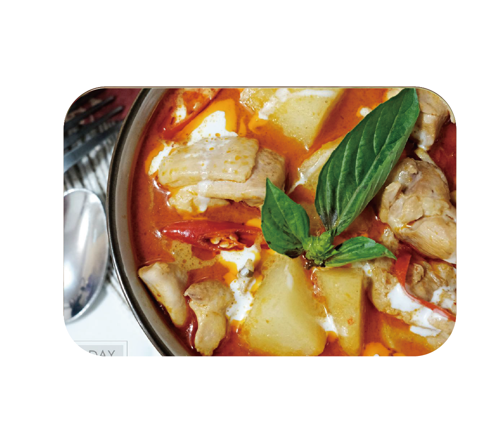
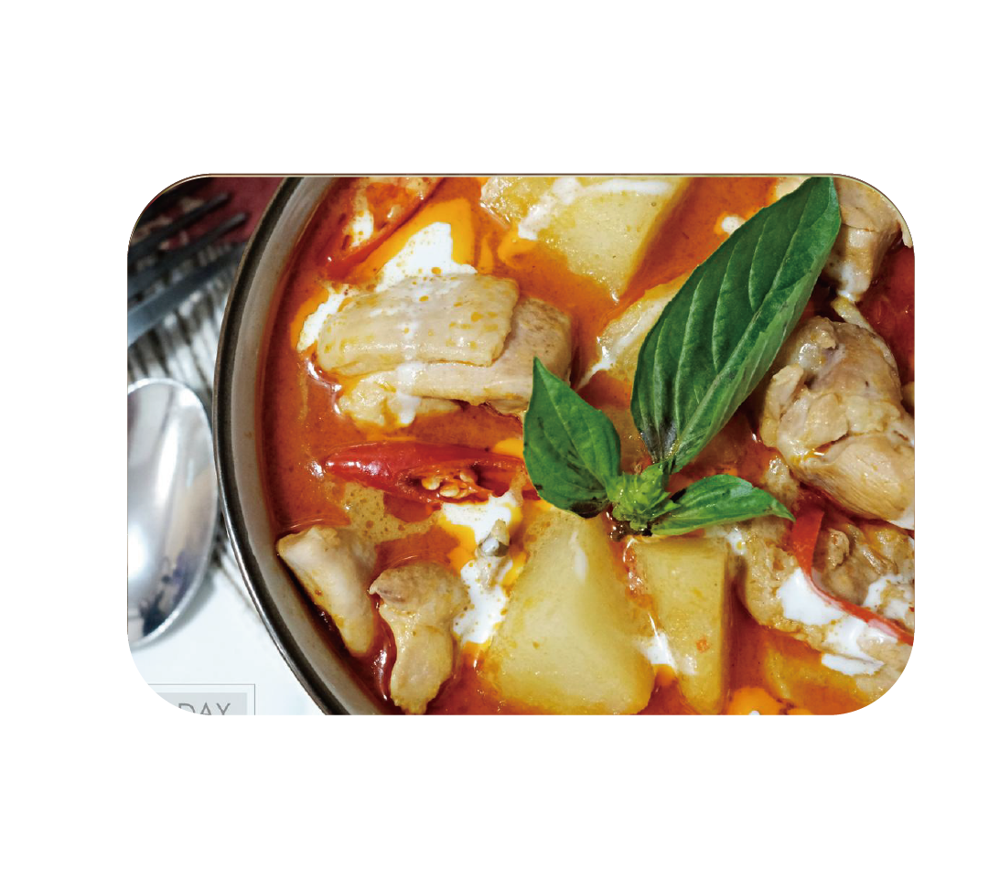
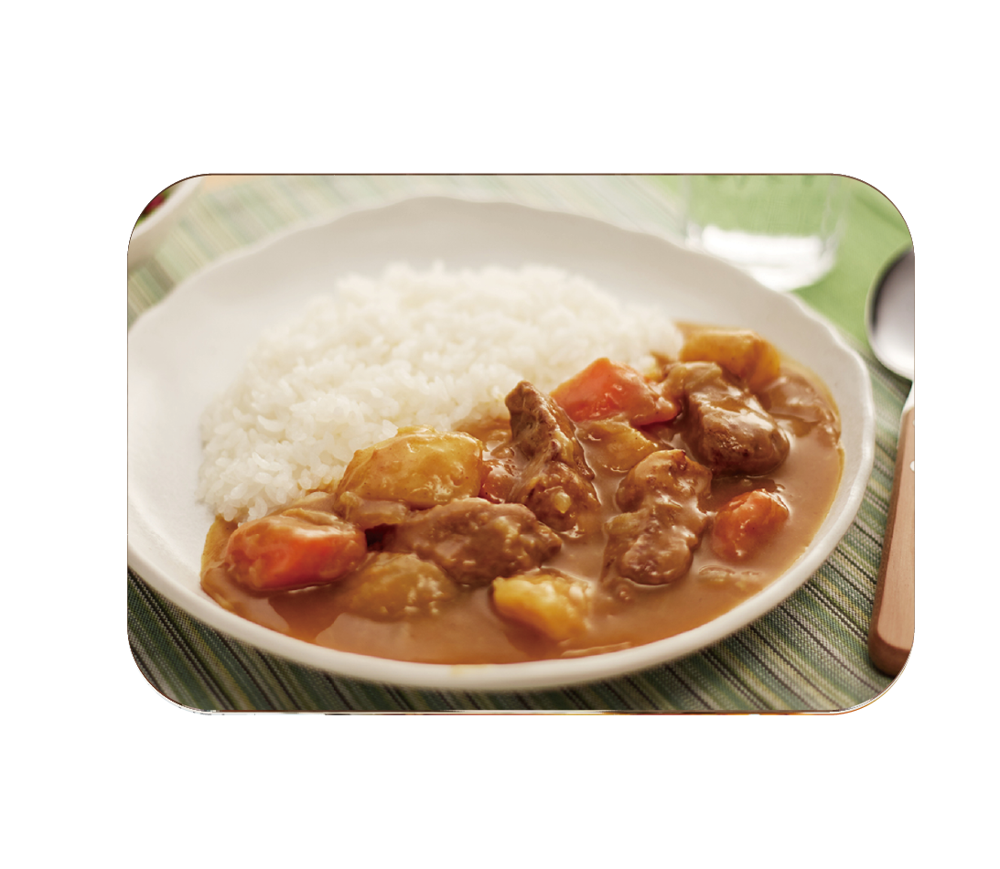
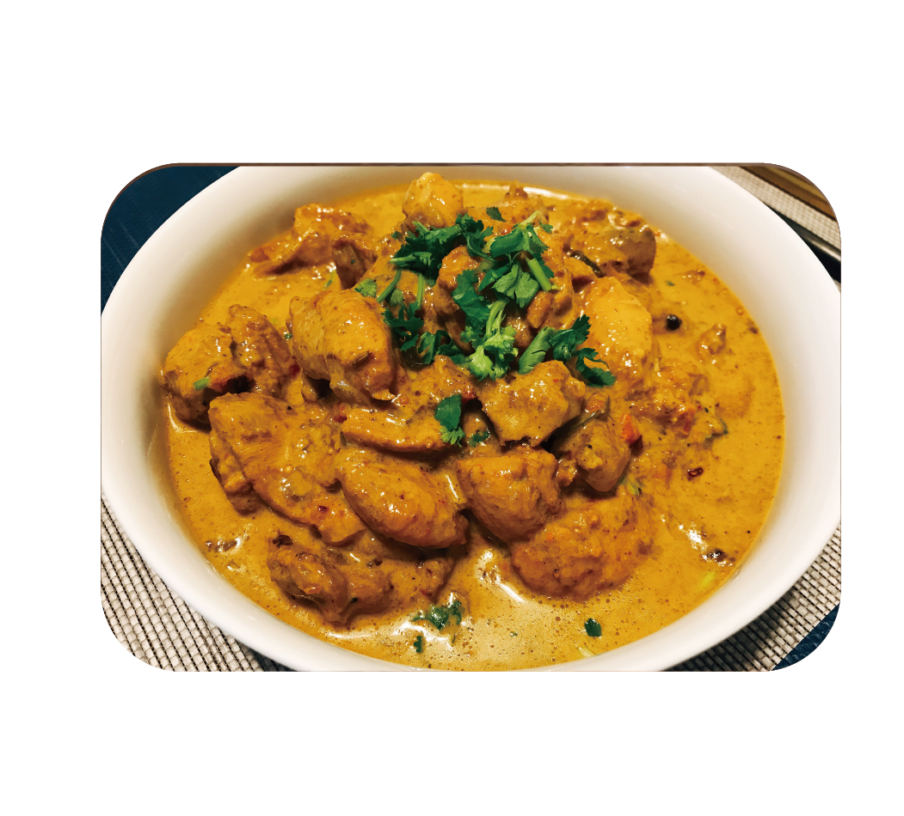
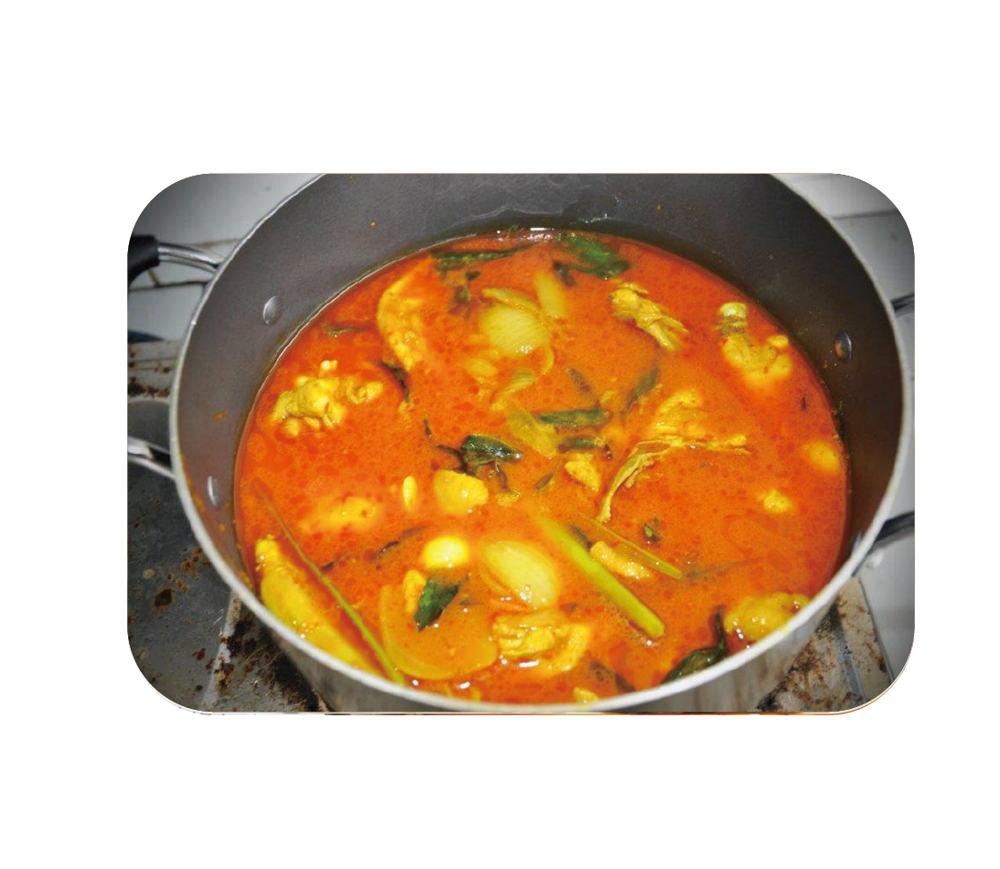
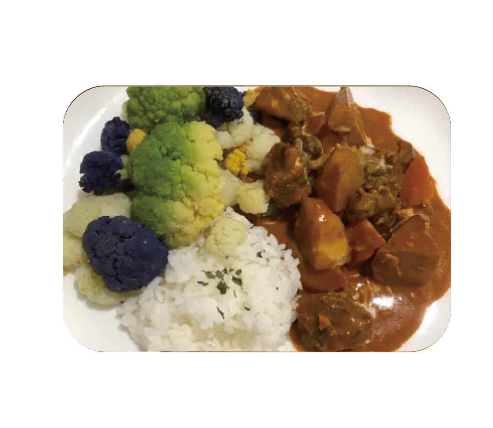
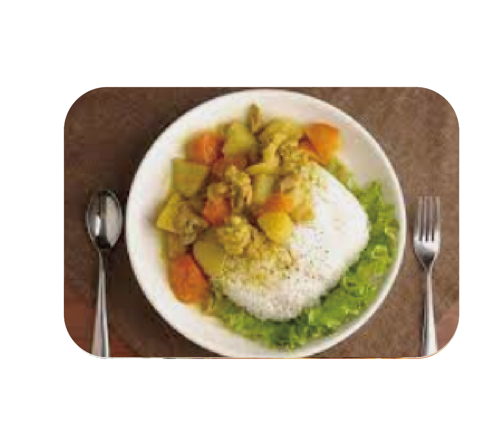
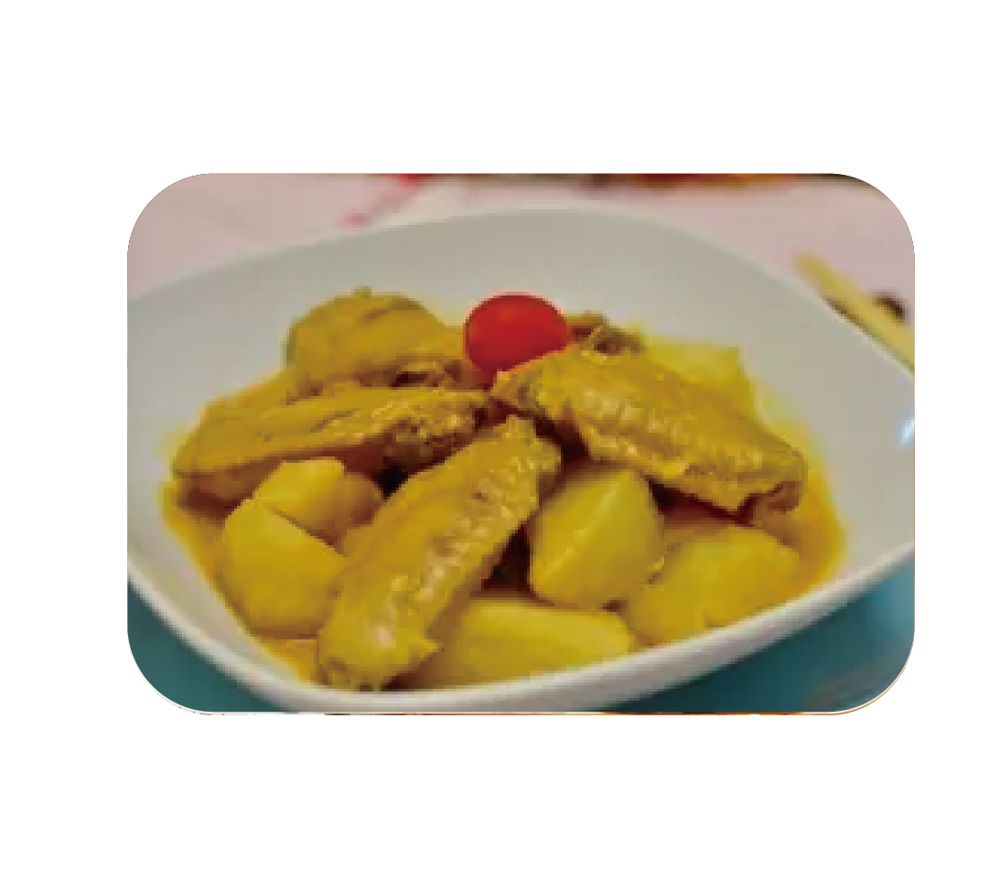

泰式咖哩
準備材料
雞腿肉 1kg 泰式紅咖哩醬 100g
馬鈴薯 2顆
紅蔥頭 3顆
椰奶 350ml
檸檬葉 5片
九層塔 少許
糖 1大匙
魚露 2大匙
水 500ml
烘飪步驟
首先將紅蔥頭下鍋爆香後，倒入紅咖哩醬炒香。接著倒入200ml的椰奶炒出香氣。
放雞肉炒拌。
再來加入水、馬鈴薯、檸檬葉和椰奶(150ml)並開中大火煮滾，接著轉小火煨煮。(直到馬鈴薯熟透)
最後起鍋前再加入九層塔、魚露和糖調味就完成了。
泰式咖哩
雞腿肉 1kg 泰式紅咖哩醬 100g
馬鈴薯 2顆
紅蔥頭 3顆
椰奶 350ml
檸檬葉 5片
九層塔 少許
糖 1大匙
魚露 2大匙
水 500ml
首先將紅蔥頭下鍋爆香後，倒入紅咖哩醬炒香。接著倒入200ml的椰奶炒出香氣。
放雞肉炒拌。
再來加入水、馬鈴薯、檸檬葉和椰奶(150ml)並開中大火煮滾，接著轉小火煨煮。(直到馬鈴薯熟透)
最後起鍋前再加入九層塔、魚露和糖調味就完成了。
日式咖哩
牛肉(或以雞肉、羊肉、蝦子代替) 450克/1塊
中等大小的洋蔥 1又3/4顆(350克/13盎司)
中等大小的胡蘿蔔 1/2條(100克/3.5盎司)
中等大小的馬鈴薯 1顆(150克/5盎司)
植物油 1大匙
水 540cc
咖哩塊 92克1包
牛肉、馬鈴薯及胡蘿蔔切丁，洋蔥切末。
在太平底鍋中熱油，以中火拌炒肉和蔬菜約5分鐘。
加水後加熱至沸騰。轉至小火，蓋上鍋蓋，加熱約15分鐘，至材料變軟。
關火後將料理塊剝成小塊，放入鍋中。攪拌至咖哩塊完全溶化後，邊攪拌邊加熱約5分鐘。
趁熱淋在米飯或麵條上，即可享用。
印度咖哩
洋蔥 1小顆 蒜頭 1大顆
薑 4片 高湯 1罐
紅蘿蔔 1小條 玉米筍 1小盒
馬鈴薯 2小顆 蘋果 1小顆
蕃茄 1顆 茄子 1條
豬里肌肉 1小條
鹽 適量
香菜 適量
太白粉 少許
洋蔥切小丁，小火慢慢炒軟，再加蒜頭、薑片炒香。
紅蘿蔔切小塊炒一下，加高湯燉煮。另外加肉桂卷與月桂葉一起燉煮。
其他蔬菜水果全都切成小塊狀，等紅蘿蔔煮稍軟後，加入玉米筍馬鈴薯蘋果下去燉煮，過一段時間在加入番茄和茄子。
等到食材都煮軟了之後，就可加印度咖哩粉、匈牙利紅椒粉、肉桂粉、奶粉下去調味，最後在加一點鹽調鹹淡，灑上香菜拌勻。
英國咖哩
雞肉 300公克 洋蔥 300公克
奶油 3大匙 麵粉 3大匙
雞高湯 5杯
豌豆仁 100克
鮮奶油 1/2杯
咖哩粉 1大匙
鹽 少許
胡椒粉 少許
雞肉切成3公分左右的小塊狀，洋蔥切丁備用。
將鍋子預熱，放入奶油，炒香洋蔥與雞肉，再放入麵粉、咖哩粉炒勻，最後加入雞高湯、豌豆仁煮約30分鐘。
加入鮮奶油及適量的鹽、胡椒粉調味即可盛起食用。
馬來西亞咖哩
牛肋條 300公克 蒜頭 酌量
紅蔥頭 酌量 薑 酌量
香茅 酌量 肉桂 酌量
洋蔥 半顆(120g) 馬鈴薯 1顆
紅蘿蔔 1條
辣椒粉(馬來西亞購入) 15ml
咖哩粉(馬來西亞購入) 15ml
薑黃粉 2.5ml*2
椰奶 1罐
將蔬菜切齊備妥，調味粉調製後放入碗中備用。加入180~200cc的水混和在香料中。
不沾鍋將牛肋煎至外觀焦黃後取出備用。
原鍋放入蒜頭及香料炒香。接著放入洋蔥及蔬菜拌炒。
淋上調和好的醬汁，拌炒均勻後加水稍微淹過食材。放入電鍋，外鍋2杯水，煮熟後再悶15分鐘。煮熟好的咖哩放涼，移至冰箱冷藏1天，讓牛肉味更入味。
冰完後，取出將上層薄油用筷子夾掉，接著加熱。
起鍋後，淋上200cc椰奶，美味的馬來風味咖哩完成。
斯里蘭卡咖哩
肉桂棒 3吋 丁香 半小匙
咖哩葉 10片 香菜籽 2小匙
茴香 1小匙 薑黃粉 半小匙
孜然 1小匙 生米 1大匙
葫蘆巴 半小匙
小荳蔻 2顆
胡椒 半小匙
紅色乾辣椒 3根
芥末 半小匙
把生米倒入鍋中烤約三分鐘，直到顏色變金黃，再倒入盤中。
剩下的香料每種分開入鍋烘烤，直到顏色變成褐色。
把冷卻的香料和米研磨再一塊，就能做出細緻的咖哩。
做好的咖哩粉除了能搭配各種肉類，也能和蔬果一起做成咖哩料理。
新加坡咖哩
雞翅膀 10隻 蒜 3~5瓣
小紅蔥 2粒 洋蔥 半粒
薑 2片
香茅 2根切斷
肉類咖哩粉 2大匙
鹽 適量
糖 適量
椰醬奶 100g
馬鈴薯 2顆
煮滾一小鍋熱水，將雞翅浸入泡3到5分鐘撈起晾乾。
燒熱鍋，下油，將薑蒜小紅蔥爆香，再倒入咖哩粉炒出香味，把香茅丟進去。
把雞翅放入炒一炒，倒入一碗水燜一燜。
倒入切塊的馬鈴薯，以及椰漿奶，再燜15~20分鐘，雞翅熟了，馬鈴薯熟了，即可。
加鹽、糖調味，上桌。